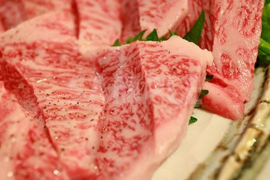
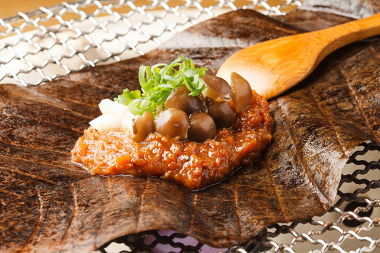
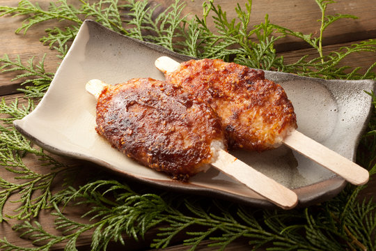

<main>
    <h2>ご当地グルメ</h2>
    <div class="grid">
        <div class="card hover">
            
            <h3>飛騨牛</h3>
            <p>きめ細やかな霜降りと柔らかさが特徴の高級和牛。</p>
        </div>

        <div class="card hover">
            
            <h3>朴葉味噌</h3>
            <p>朴の葉に味噌とネギなどをのせて焼く、岐阜の郷土料理。</p>
        </div>

        <div class="card hover">
            
            <h3>五平餅</h3>
            <p>ご飯を串に刺して焼き、甘辛味噌を塗った山間部の名物。</p>
        </div>
    </div>
</main>